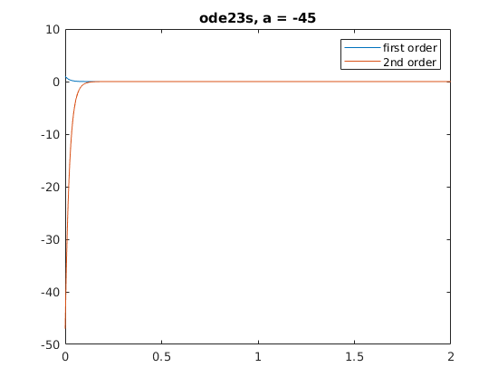
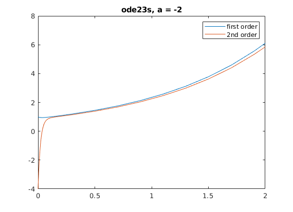
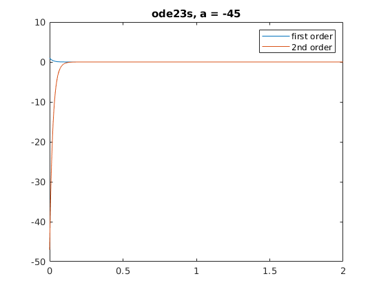
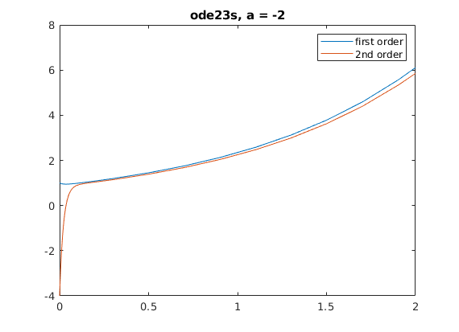

%First we must convert the second order diferential equation into a system %of first orders %for the purpose of this example let lambda be represented by $ %y" - (1 - $)y' - $y = 0 %let x1' = x2 % x2' = x2" %where x2" can be represented as ($-1)x2 + $x1 from first equation %so we ge the following linear system % x1' = x2 % x2' = ($-1)x2 + $x1 %For this example assume an eigenvalue is represented as & %to calculate the eigen values of a matrix, calculate det(A-&I) = 0 where I %is the identify matrix of size n*n which n being the size of A %The above system can be represented in matrix form % 0 1 % $ (1-$) * Y %where Y = transpose(x1,x2) %solving for the eigenvalues we get he following expression % &^2 + ($-1)& - $ = 0 %which is the expression we will use to get the eigenvalues denoted by & % First with $ = -2 % &^2 -3& + 2 = 0 % Solving we get & = 1, & = 2 %clearly here neither eigenvalue is considerably greater than the other and %thus we can say that this system is not stiff % Now with $ = -45 % &^2 - 46& + 45 = 0 % Solving we get & = 1 , & = 45 %with abs(45 - 1) > abs(2 - 1) we can say that the system is far stiffer with a $ = -45 %However it is not neccisarily enough to conclude that he system is stiff %on its own as it is usually if the largest eigen value of a matrix is %at least ten times the size of the smallest eigenvalue %below I use some tools described in matlab's documentation to solve a %second order differential equation, the process is the same as described %above syms y(t) [V1] = odeToVectorField(diff(y, 2) == -46*diff(y) - (-45)*y); [V2] = odeToVectorField(diff(y, 2) == -3*diff(y) - (-2)*y); m1 = matlabFunction(V1, 'vars', {'t', 'Y'}); m2 = matlabFunction(V2, 'var', {'t', 'Y'}); [df1, t1] = ode45(m1, [0 2], [1 -47]); [df2, t2] = ode45(m1, [0 2], [1 -4]); figure plot(df1, t1) title("ode45, a = -45") legend("first order", "2nd order") figure plot(df2, t2) title("ode45, a = -2") legend("first order", "2nd order") [df1, t1] = ode23s(m1, [0 2], [1 -47]); [df2, t2] = ode23s(m1, [0 2], [1 -4]); figure plot(df1, t1) title("ode23s, a = -45") legend("first order", "2nd order") figure plot(df2, t2) title("ode23s, a = -2") legend("first order", "2nd order")
  
 